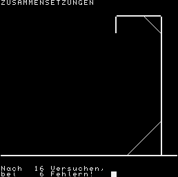
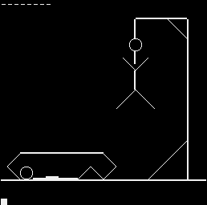

Man hat gefühlte 30 Versuche, den richtigen Begriff
zu erraten.
Die Spielidee besteht darin,
dass in einer Spielrunde vom Spieler
Begriff fuer Begriff abgerufen werden
kann.
Dabei wird jeder Buchstabe des Begriffes
durch einen Strich angezeigt. Der
Spieler hat nun die Moeglichkeit
den Begriff zu erraten bzw. durch
Eingabe eines Buchstabens diesen
im Begriff an allen vorkommenden
Stellen aufzublenden. Damit wird
der Begriff immer vollstaendiger.
Zeichensatz UTF-8+Z1013()+CTRL()-ohne Umlaute(äöüß)
2 OUTC.12
3 PR." ",
4 PR." B E G R I F F E --------------- ",
5 PR." THFAG/86";PR.;PR.;PR.;PR.
6 F.I=1 TO 2000
7 N.I
10 REM THFAG/86
11 OUTC.12
12 F.I=1 TO 12;PR.
13 N.I
14 PR."Wollen Sie die Spielregeln ken- nenlernen? ",
15 W=INC.;OUTC.W;PR.;PR.;PR.;PR.
16 OUTC.12
17 IF W='M'G.20
18 IF W='J'G.6000
19 G.6100
20 OUTC.12
22 E=HEX(3000)
25 PR.;PR."Erraten von Begriffen";PR.
30 PR."Datei neu (J/ENT): ",
40 W=INC.;OUTC.W;PR.;PR.
50 IF W#'J'G.140
60 V=32
70 Q=100
80 OUTC.12
85 F.I=1 TO 10;PR.
90 N.I
95 PR."Bitte einen Moment Geduld!"
100 PR.;PR.;PR.;PR.
105 U=E+(Q*V)
110 F.I=E TO U
115 PO.I,32
120 N.I
130 PO.E,'*'
140 F.K=E TO U ST.V
150 IF PE.(K)='*' G.160
155 N.K
160 A=(K-E)/V
170 PR."Von ",#4,Q," Datensaetzen"
180 PR."Sind",#4,A," erfasst."
190 F.I=1 TO 2000
191 N.I
192 OUTC.12
193 F.I=1 TO 10;PR.
195 N.I
200 PR."Auswahl durch Kennziffer:"
205 PR."-------------------------";PR.
210 PR."Aufbau............0"
220 PR."Anzeigen..........1 Begriff raten.....2"
240 PR."Aendern...........3 Status............4"
260 PR."Daten retten......5 Daten einlesen....6"
262 PR."Spielbeginn.......7 Ende..............8"
265 PR.
267 N=0
270 INP."Eingabe Kennziffer "W
280 IF.W<0 G.190
290 IF W>8 G.190
293 IF W=7 G.11
294 IF W=8 G.10000
296 OUTC.12
300 IF W=2 N=2;GOS.1000
303 IF N=2 GOS.1280
305 IF N=2 G.190
310 G.(W*300+400)
400 IF K=U PR."Datei voll!";PR.;G.160
420 X=K
430 GOS.8000
440 K=K+V
442 GOS.1890
443 IF W#13 G.400
450 PO.K,'*'
460 G.160
700 IF K=E PR."Datei leer!";PR.;G.160
710 GOS.5000
720 GOS.5200
730 GOS.7000
740 IF Y=B GOS.1890
745 IF Y=B G.190
750 X=X+V
760 Z=Z+1;Y=Y+1
770 IF Z=10 GOS.1850
780 IF X>=K GOS.1890
790 IF X>=K G.190
800 G.730
1000 GOS.5000
1005 OUTC.12
1010 O=HEX(C0);P=HEX(EF);C=0;D=HEX(F0)
1011 G.1015
1012 O=0;P=HEX(EC)
1015 GOS.4000
1020 F.S=U+1 TO U+V
1030 PO.S,32
1040 N.S
1050 S=U+1
1055 F.J=X TO H
1060 IF PE.(J)#32 PO.S,95
1065 S=S+1
1070 N.J
1072 T=0
1073 M=10;L=1
1075 F=HEX(EC00)
1080 F.S=U+1 TO U+V
1085 PO.F,(PE.(S))
1090 F=F+1
1100 N.S
1105 IF M=0 G.1245
1107 PR.
1110 W=INC.;OUTC.W;PR.
1111 M=0;L=L+1
1113 IF W=13 G.1240
1115 S=U+1
1117 I=0
1120 F.J=X TO.H
1130 IF PE.(J)=W PO.S,W;I=1
1133 IF PE.(J)#PE.(S) G.1200
1135 S=S+1
1140 N.J
1180 IF I=0 T=T+1;G.3000
1190 G.1075
1200 M=M+1
1210 G.1135
1240 L=L-1
1245 F=HEX(EC00)
1250 F.J=X TO H
1260 PO.F,(PE.(J))
1265 F=F+1
1270 N.J
1275 PR.;PR."Nach ",#3,L," Versuchen,"
1276 PR."bei ",#3,T," Fehlern! ",
1277 F.I=1 TO 3000
1278 N.I
1279 RE.
1280 O=0;P=HEX(EC);C=0;D=HEX(F0)
1290 GOS.4000
1295 RE.
1300 IF K=E G.700
1310 GOS.5000
1320 GOS.8000
1330 G.190
1600 PR."Dateistatus";PR.
1620 F.I=E TO U ST.V
1630 WORD(I);PR." ",
1640 OUTC.(PE.(I))
1650 OUTC.(PE.(I+1))
1660 PR." ",
1670 N.I
1675 PR.
1680 GOS.1890
1690 PR.;OUTC.12;G.160
1850 TAB(20)
1855 PR.">ENTER< ",
1860 W=INC.;OUTC.W
1870 Z=0
1880 RE.
1890 PR.;PR.;TAB(15);PR."Ende ",;GOS.1855
1895 RE.
1900 F.J=HEX(F0) TO HEX(FF)
1920 PO.J,32
1930 N.J
1935 PR."Filename: ",
1940 X=HEX(F0);H=X+15
1950 GOS.8020
1960 PO.HEX(E0),E
1970 PO.HEX(E1),E/256
1980 PO.HEX(E2),K
1990 PO.HEX(E3),K/256
2000 C.HEX(A0C)
2010 C.HEX(10C)
2020 C.HEX(A19)
2030 C.HEX(10C)
2040 G.160
2200 C.HEX(A0C)
2220 C.HEX(10F)
2230 F.I=HEX(F0) TO HEX(FF)
2240 OUTC.(PE.(I))
2250 N.I
2260 C.HEX(A19)
2270 C.HEX(10F)
2280 PR.;G.140
3000 IF T=1 G=238;C=HEX(EF80);D=HEX(EF9F);P=1
3010 IF T=2 G=232;C=HEX(EF7D);D=HEX(EC7D);P=-32
3020 IF T=3 G=144;C=HEX(EF77);D=HEX(EEDC);P=-31
3025 IF T=4 G=145;C=HEX(ECBC);D=HEX(EC7A);P=-33
3030 IF T=5 G=249;C=HEX(EC5C);D=HEX(EC55);P=-1
3035 IF T=6 G=244;C=HEX(EC74);D=HEX(ECB4);P=32
3040 IF T=8 G=244;C=HEX(ED14);D=HEX(EDB4);P=32
3045 IF T=9 G=144;C=HEX(EDD4);D=HEX(EE12);P=31
3050 IF T=10 G=145;C=HEX(EDD5);D=HEX(EE17);P=33
3055 IF T=11 G=145;C=HEX(ED54);D=HEX(ED33);P=-33
3060 IF T=12 G=144;C=HEX(ED55);D=HEX(ED36);P=-31
3065 IF T=13 G=145;C=HEX(EF62);D=HEX(EF40);P=-33
3070 IF T=14 G=144;C=HEX(EF70);D=HEX(EF51);P=-31
3075 IF T=15 G=144;C=HEX(EF21);D=HEX(EF02);P=-31
3080 IF T=16 G=145;C=HEX(EF31);D=HEX(EF10);P=-33
3085 IF T=18 G=249;C=HEX(EF65);D=HEX(EF6B);P=1
3090 IF T=19 G=144;C=HEX(EF6C);D=HEX(EF4D);P=-31
3095 IF T=20 G=145;C=HEX(EF4E);D=HEX(EF6F);P=33
3100 IF T=21 G=251;C=HEX(EF67);D=HEX(EF68);P=1
3105 IF T=22 G=249;C=HEX(EEE3);D=HEX(EEEF);P=1
3110 IF T=23 G.3500
3115 IF T=7 C=HEX(ECD4);G.3400
3120 IF T=17 C=HEX(EF43);G.3400
3300 F.I=C TO D ST.P
3310 PO.I,G
3320 N.I
3330 G.1075
3400 G=174
3410 PO.C,G
3420 G=G-1;C=C+1
3430 PO.C,G
3440 G=G-1;C=C+32
3450 PO.C,G
3460 G=G-1;C=C-1
3470 PO.C,G
3480 G.1075
3500 F.I=1 TO 2000
3510 N.I
3530 GOS.1280
3540 OUTC.12
3550 F.I=1 TO 10;PR.
3560 N.I
3570 PR."Nun sind Sie gestorben und be- stattet! Wofuer haben Sie eigentlich Ihren Kopf? Sie muessen noch viel ueben!"
3572 F.I=1 TO 3000
3574 N.I
3580 T=32000
3590 RE.
4000 PO.HEX(1B),O;PO.HEX(1C),P
4010 PO.HEX(1D),C;PO.HEX(1E),D
4020 C.HEX(F6D1)
4030 RE.
5000 PR.;Z=0
5020 INP."Ab Pos."W;Y=W-1
5025 IF Y<0 G.5020
5030 X=E+(Y*V);H=X+V-1
5040 IF X>=K G.5020
5050 RE.
5200 INP."Bis Pos."W;B=W-1
5230 IF B>A-1 G.5200
5250 IF B<Y G.5200
5360 RE.
6000 F.I=1 TO 7;PR.
6010 N.I
6020 PR."Die Spielidee besteht darin, dass in einer Spielrunde vom Spieler Begriff fuer Begriff"
6030 PR."abgerufen werden kann. Dabei wird jeder Buchstabe des Be- griffes durch einen Strich an-"
6040 PR."gezeigt. Der Spieler hat nun die Moeglichkeit den Begriff zu erraten bzw. durch Eingabe "
6050 PR."eines Buchstabens diesen im Be- griff an allen vorkommenden Stellen aufzublenden. Damit"
6060 PR."wird der Begriff immer voll- staendiger."
6065 PR.;PR.
6070 PR."Kann es losgehen? ",
6080 W=INC.;OUTC.W
6090 PR.;PR.;PR.;PR.
6100 R=0;N=0
6110 F.K=E TO U ST.V
6120 IF PE.(K)='*' G.6140
6130 N.K
6140 A=(K-E)/V
6145 IF A=0 G.70
6150 G=A+2
6160 Y=RND(G)
6165 Y=Y-1;IF Y<0 G.6150
6170 X=E+(Y*V);H=X+V-1
6180 IF X>=K Y=Y-A+1;G.6165
6190 GOS.1005
6195 Y=Y+1
6200 R=R+1
6210 N=N+T
6230 F.I=1 TO 2000
6235 N.I
6236 GOS.1890
6237 GOS.1280
6238 OUTC.12
6240 IF W#13 G.6170
6250 OUTC.12
6260 F.I=1 TO 10;PR.
6270 N.I
6300 N=N/R
6310 PR.#1,R," Begriffe haben Sie erraten."
6320 PR."Dabei hatten Sie durchschnitt- lich ",#1,N," Fehler."
6325 IF N>23 G.6500
6330 IF N<15 G.6360
6340 PR."Sie sind jedesmal nur sehr knapp an Ihrem Grab vorbeige- kommen. Mehr denken ueben!"
6350 G.6500
6360 IF N<10 G.6390
6370 PR."Sie lagen bereits in Ihrem Sarg. Benutzen Sie das naechste mal Ihre grauen Zellen ein "
6375 PR."bischen mehr!"
6380 G.6500
6390 IF N<5 G.6420
6400 PR."Bei fast jedem Versuch hingen Ihre Gebeine schon am Galgen. Ihr Sarg wurde bereits gezim-"
6405 PR."mert. Das naechste mal mehr denken!"
6410 G.6500
6420 IF N=0 G.6450
6430 PR."Ihr Galgen stand bereits. Dennoch insgesamt nicht uebel!"
6440 G.6500
6450 PR."Ihre Methode ist hervorragend! Sie wissen gar nicht, was ein Galgen ist. Ich hoffe, das war eine Ausnahme!"
6500 PR.;PR.;PR.;PR.
6510 PR."Wollen Sie weiterspielen? ",
6520 W=INC.;OUTC.W
6525 OUTC.12
6530 IF W='J' R=0;N=0;G.6170
6540 G.10000
7000 PR.
7020 F.J=X TO X+V-1
7030 OUTC.(PE.(J))
7040 N.J
7050 RE.
8000 PR.
8010 PR."Begriff:"
8020 F.J=X TO H
8030 IF PE.(J)='*' G.9000
8040 IF PE.(J)#32 G.8070
8050 IF PE.(J+1)=32 G.9000
8070 OUTC.(PE.(J))
8080 N.J
9000 W=INC.
9020 IF W=8 J=J-1;G.9100
9030 IF W=9 J=J+1;G.9120
9040 IF W=13 OUTC.W;RE.
9050 PO.J,W
9060 J=J+1
9070 OUTC.W
9080 IF J#H G.9000
9090 PR.;RE.
9100 IF J<X J=J+1;G.9000
9110 G.9070
9120 IF J>H J=J-1;G.9000
9130 G.9070
10000 OUTC.12
10010 F.I=1 TO 10
10012 PR.
10014 N.I
10016 TAB(5)
10020 PR."Auf Wiedersehen!"
10030 PR.;PR.;PR.;PR.;PR.
10040 STOP
255 4|6|a}]x`}Drc}bG~L~~ENFONEXDATINPUDIREALEGO TFNENIRESTORGO SURETURRESTOOUONULWAIDEPOKPRINLISTECLEAFNRETURSAVUSINTABTFSPCTHENOSTEANOSGINABUSFRINPOSQRNLOEXCOSITAATPEELESTRVAASCHRLEFTRIGHTMIDLPOINSTELSLPRINTRACLTRACRANDOMIZSWITCLWIDTLNULWIDTLVALLVASPEAPRECISIOCALKILEXCHANGLINLOADGRULOANEAUTCOPALOADAMERGEALOAAMERGASAVLISLLISRENUMBEDELETEDICON|SNEXT W/O FOSYNTAX ERRORETURN W/O GOSUOUT OF DATILLEGAL FUNCTIOARITHMETIC OVERFLOOUT OF MEMORUNDEFINED STATEMENTSUBSCRIPT OUT OF RANGRE-DIMENSIONED ARRACAN'T /ILLEGAL DIRECTYPE MIS-MATCNO STRING SPACSTRING TOO LONTOO COMPLECAN'T CONTINUUNDEFINED USER CALFILE NOT FOUNILLEGAL EOFILES DIFFERENRECOVEREFNRETURN W/O FUNCTION CALMISSING STATEMENT NUMBE*INVALID INPUT @ LINEREADY:*EXTRA LOST*BREA*.$!0!?w, $8+"Z!"T>,2>222!/"!!"ABGESCHMACKTHEIT VERBRECHERTUM INKUBATION BEREITSCHAFTSDIENST JALOUSIE HUMOR UEBERLAGERUNGSEMPFAENGER HYDROMECHANIK TESTER FUER TTL-SCHALTKREISE XEROGRAPHIE PHYLOGENESE ANKE YELOWSTONE-NATIONALPARK MICHAEL CHEOPSPYRAMIDE STEFAN MAIK KLATSCHBASE DUDEN KAMEL LEXIKON DER MATHEMATIK TIER WECHSELDISKONT MAXIMUM-MINIMUM-THERMOMETER MEGAHERTZ FINANZEN NICHTEINMISCHUNG BETTGEFLUESTER ZOO WOERTERBUCH KAABA WARMBLUT PASODOBLE GREENHORN ZUSAMMENSETZUNGEN EINBEERE WENDEPUNKT PALLADIUM NORMALHOEHEPUNKT BOB REKLAMATIONEN ZIROKUMULUS CHARYBDISS YTTERBIUM DIKOTYLEDONE ZWEIKEIMBLAETTRIGE PFLANZE DRESDEN QUASTENFLOSSER X-CHROMOSOM TAGALE IMMUNOLOGIE SAEUERLING COMPUTERTECHNIK VERSTAENDIGUNG WECKER ZAUBERWUERFEL